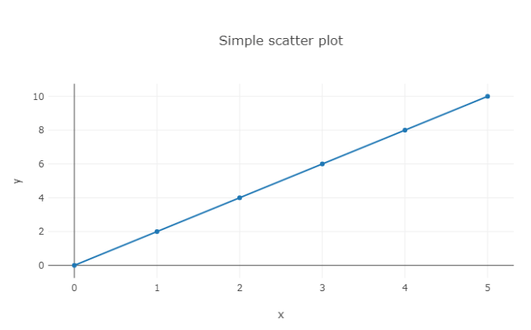
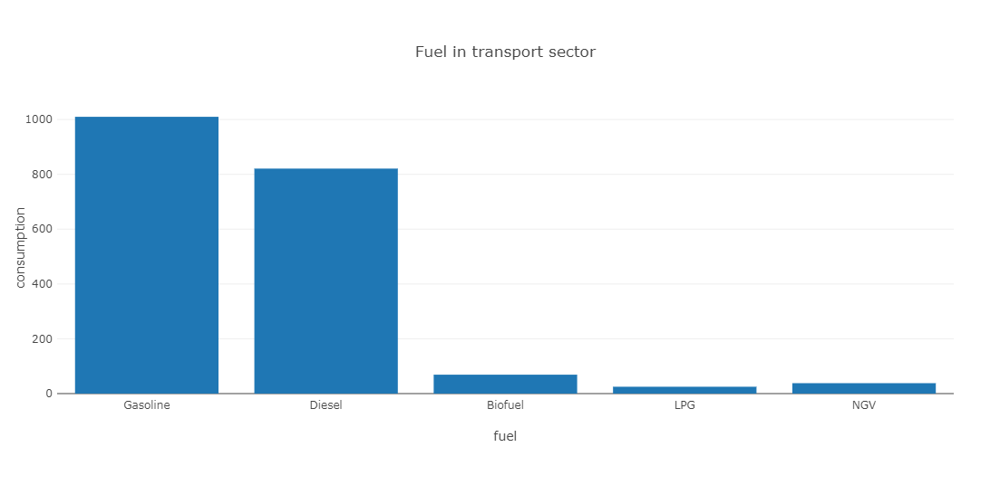
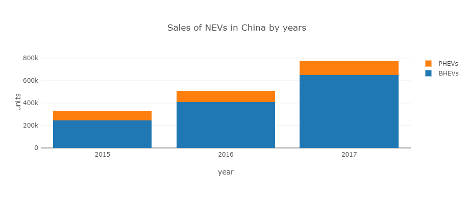
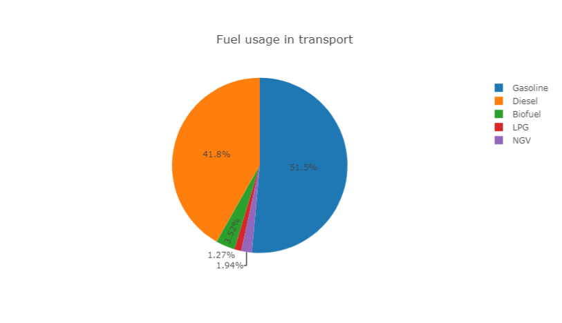
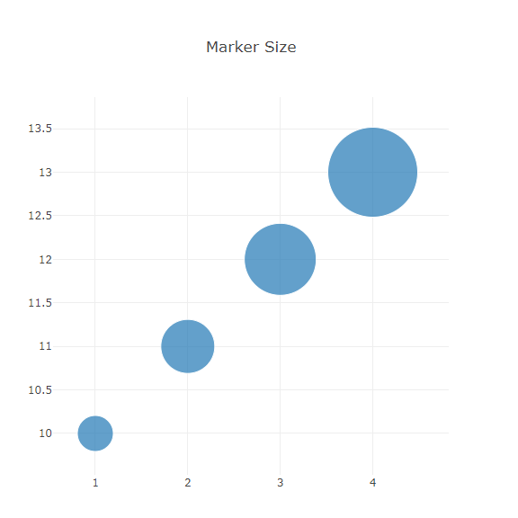
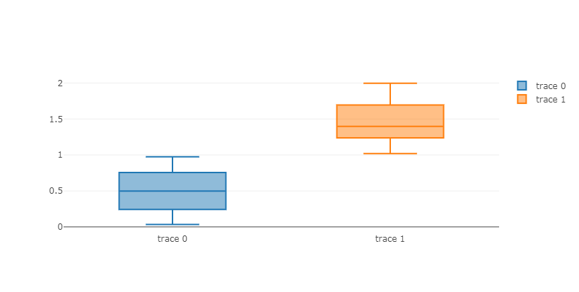

Plots¶
Plots in Chalk'it may be made either with Python or JavaScript code:
- Python-based plots are available using Plolty Python or Matplotlib, currenly only with the Python Script-type dataNode
- JavaScript-based plots are available using Plotly.js, Apache ECharts or Vega
- Simplified usage (array actuators) is available for Plotly line, Plotly bar and Plotly pie. Otherwise, use the Plotly generic for a complete Plotly.js options and configurations.
Plotly.js-based widgets share common parameters, especially hideModeBar which allows to hide plot options toolbar at dashboard play.
Plotly line¶
Allows to quickly display line charts, when x and y axis are expressed as arrays of numbers. The parameter numberOfAxis allows to specifiy up to 8 y-axis actuators (named y1 to y8), sharing the same x-axis actuator (named x). Widget layout may be configured in the "Graphical properties" tab.

Plotly bar¶
Here parameter numberOfAxis allows to specify couples of x and y axis actuators (named x1, y1 to x8, y8).
Some examples :


Plotly pie¶
This widget has two actuators :
- values: an array of values to be displayed as pie chart
- labels: an optional array of labels associated to values

Example :
Plotly Real-time¶
The widget provides a real-time graph for displaying numeric-based dataNode inputs, having a given sample-time.
Example : real-time-kpi-plotly-js.xprjson
Plotly JavaScript generic¶
This widget accepts three actuators : data, layout and selection. In opposite to previous Plotly-based widgets, layout cannot be set from "Graphical properties" tab. This brings more expressive power for layout specification using programming dataNodes.
Defining data and layout is illustrated in plotly.js documentation.
Some examples:


The selection actuator is detailed in this topic
Plotly Python Generic¶
This widget expects a Plotly figure Python object, produced by a Python Script-type dataNode. Below a code example:
import plotly.express as px
df = px.data.gapminder().query("country=='Canada'")
fig = px.line(df, x="year", y="lifeExp", title='Life expectancy in Canada')
return fig
All receipes may be found in Ploty Python documentation.
No call to fig.show() is needed because rendering process will be entirely handled by Chalk'it according to its rendering rules.
Example:
Matplotlib¶
In the same way as Plotly Python widget, Matplotlib widget expect a figure object as actuator. Below a code example:
import matplotlib.pyplot as plt
fig, ax = plt.subplots()
fruits = ['apple', 'blueberry', 'cherry', 'orange']
counts = [40, 100, 30, 55]
bar_labels = ['red', 'blue', '_red', 'orange']
bar_colors = ['tab:red', 'tab:blue', 'tab:red', 'tab:orange']
ax.bar(fruits, counts, label=bar_labels, color=bar_colors)
ax.set_ylabel('fruit supply')
ax.set_title('Fruit supply by kind and color')
ax.legend(title='Fruit color')
return fig
All receipes may be found in Matplotlib documentation.
- No call to
plt.show()is needed because rendering process will be entirely handled by Chalk'it according to its rendering rules.
Example:
Vega¶
In the same spirit as Plotly generic widget above, you can visualize Vega specifications and connect them to data from other dataNodes.
Browse Vega examples gallery. Copy and paste the appropriate visualization to a JavaScript Formula dataNode. Finally, connect this dataNode to the specification widget actuator.
In this examples gallery, data is typically read from URL referenced sources using the Vega url keyword. You can connect to Chalk'it dataNodes using the Vega values keyword instead.
Be aware when copying examples that URLS in these examples use relative paths. For proper execution on Chalk'it, the absolute data path needs to be used (e.g. use 'https://vega.github.io/vega/data/movies.json' instead of 'data/movies.json').
Some examples:
ECharts¶
Simply, copy and paste the needed visualization from ECharts examples gallery to a JavaScript Script dataNode. This example shall return an option JSON according to ECharts grammar. Finally, connect this dataNode to the option widget actuator.
Some examples: